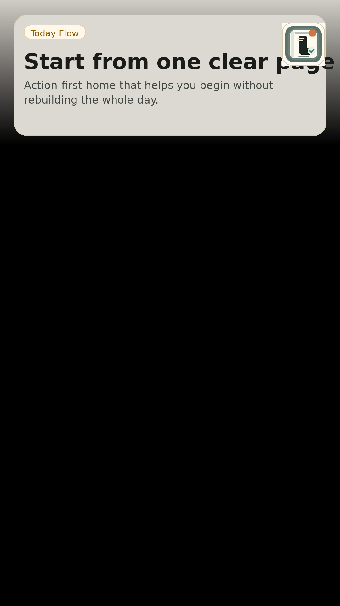
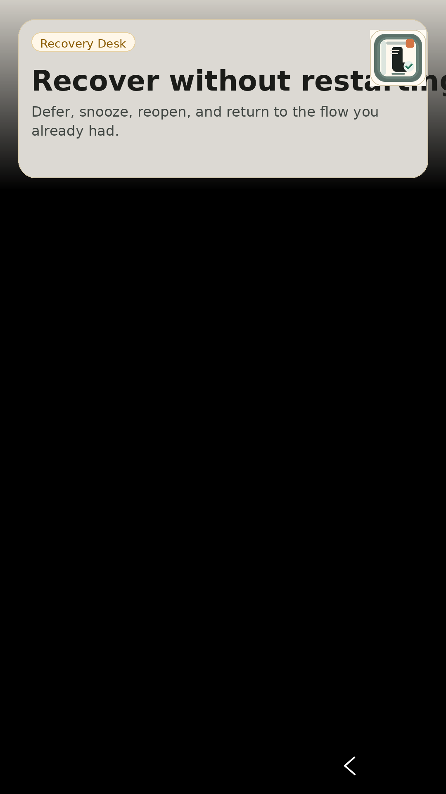
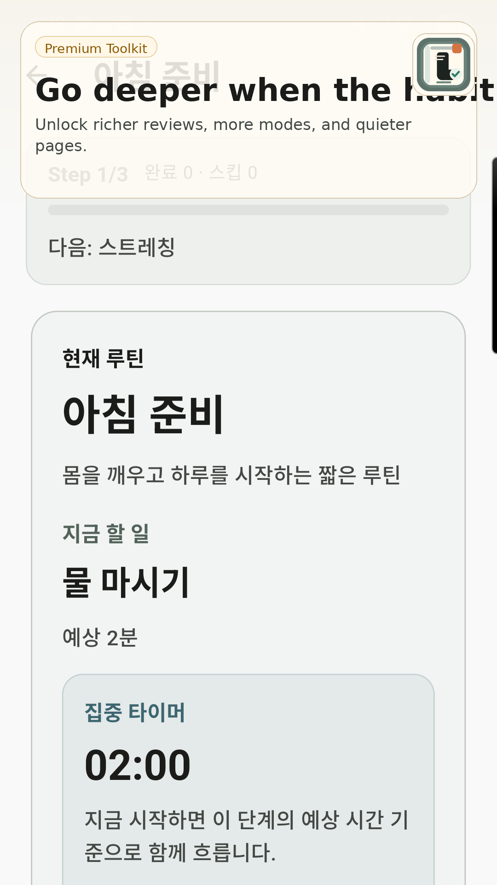
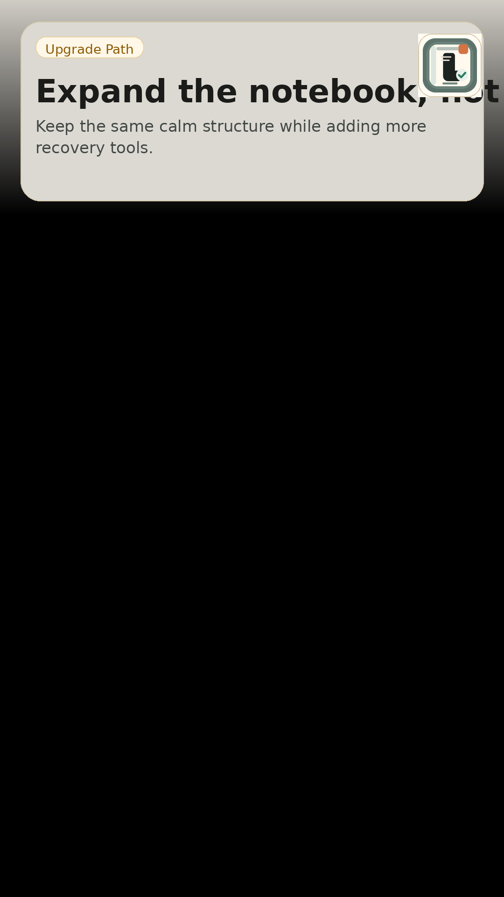

액션 퍼스트 홈오늘 시작할 흐름을 먼저 보여줍니다.
Home

루틴은 오늘 지금 시작할 일을 빠르게 고르고, 중간에 흐름이 깨져도 다시 붙게 돕는 로컬 우선 루틴 앱입니다.




대시보드보다 오늘 지금 실행할 루틴을 먼저 보여줍니다.
스킵, 미루기, 다시 열기로 끊긴 흐름을 이어갑니다.
평일, 주말, 시험기간, 회복 모드처럼 상황별 흐름을 나눕니다.
잘 붙는 시간대와 자주 복구하는 구간을 다음 조정으로 연결합니다.
루틴, 실행 기록, 설정은 기본적으로 사용자의 기기 안에서 관리됩니다. 핵심 루틴 실행 흐름은 계정이나 서버 없이도 사용할 수 있습니다.